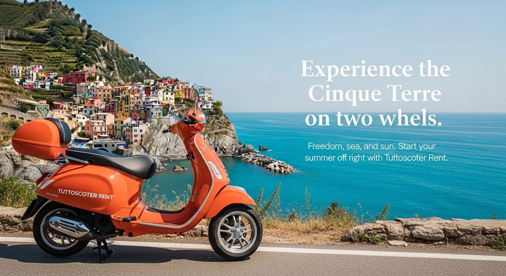

Der beste Weg, La Spezia und die Cinque Terre in völliger Freiheit zu besuchen.
Willkommen in La Spezia, dem Tor zu den Cinque Terre! Wenn Sie ein Tourist oder Kreuzfahrtgast sind, der gerade im Hafen von La Spezia von Bord gegangen oder am Bahnhof angekommen ist, ist der klügste Weg, sich auf zwei Rädern fortzubewegen.
Vergessen Sie überfüllte Fahrpläne und Parkplatzstress. Mit Tuttoscooter können Sie einen wendigen und zuverlässigen 125er Roller mieten, um die ligurische Küste völlig autonom zu erkunden. Wir sind der Ansprechpartner für Rollervermietung in La Spezia und bieten schnellen, freundlichen Service ohne Überraschungen.

Der Besuch der Cinque Terre mit dem Roller ist ein unvergessliches Erlebnis. Die Küstenstraße, die La Spezia mit Riomaggiore, Manarola, Corniglia, Vernazza und Monterosso verbindet, bietet einzigartige Ausblicke direkt über dem Meer.
Während Züge im Sommer oft überfüllt und heiß sind, schenkt Ihnen der Roller die Meeresbrise und die Möglichkeit, an jedem Aussichtspunkt für ein Erinnerungsfoto anzuhalten. Es ist die beste Alternative für diejenigen, die das authentische Ligurien abseits der Massen erleben möchten.
Viele Touristen wählen den Zug, aber der Roller bietet unvergleichliche Vorteile für diejenigen, die das Territorium wirklich erleben möchten.
| Merkmal | Cinque Terre Zug | Tuttoscooter Roller |
|---|---|---|
| Freiheit | ❌ Feste Fahrpläne | ✅ Losfahren, wann immer Sie wollen |
| Menschenmassen | ❌ Überfüllte Züge | ✅ Unter freiem Himmel, keine Massen |
| Panorama | ❌ Meistens Tunnel | ✅ Ständiger Meerblick |
| Haltestellen | ❌ Nur an Bahnhöfen | ✅ Anhalten, wo immer Sie möchten |
| Komfort | ❌ Oft im Stehen | ✅ Sitzend und entspannt |
*Der Roller ist die Wahl derer, die kein bloßer "Massentourist", sondern ein freier Reisender sein wollen.
Wir bieten transparente und wettbewerbsfähige Preise für die Rollervermietung in La Spezia.
Was enthalten ist:
✅ Zwei desinfizierte Helme mit Unterhelmen
✅ Haftpflichtversicherung inklusive — deckt Schäden an Dritten (Personen und Fahrzeugen). Schäden am gemieteten Fahrzeug liegen in der Verantwortung des Fahrers.
✅ Unbegrenzte Kilometer für die lokale Nutzung (fragen Sie nach Informationen)
✅ Lokale Pannenhilfe inklusive
Sind Sie ein Kreuzfahrtgast? Zeit ist kostbar! Verschwenden Sie sie nicht mit Warten auf Busse oder Taxis.
Unser Rollervermietungsservice ist ideal für diejenigen, die nur wenige Stunden Zeit haben und so viel wie möglich sehen wollen. Wir bieten eine schnelle Abholung und vereinfachte Verfahren, damit Sie sofort mit Ihrem unabhängigen Ausflug nach Portovenere oder in die Cinque Terre beginnen können.
Buchen Sie im Voraus, damit Ihr Roller bereitsteht, wenn Sie ankommen!
Die Verfügbarkeit ist begrenzt, besonders in der Hochsaison. Buchen Sie Ihren Roller jetzt.
📲 Jetzt über WhatsApp buchenSchnelle Antwort garantiert